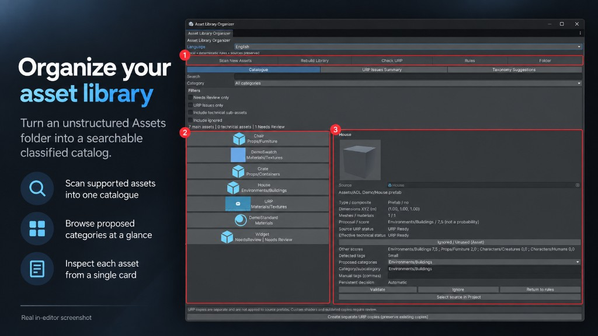
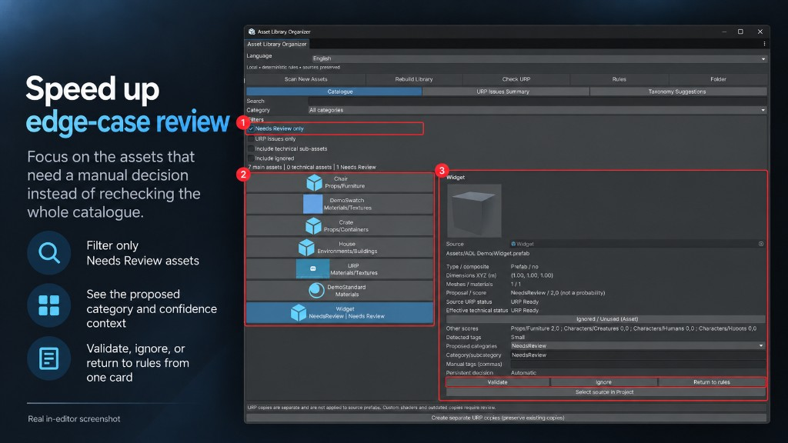
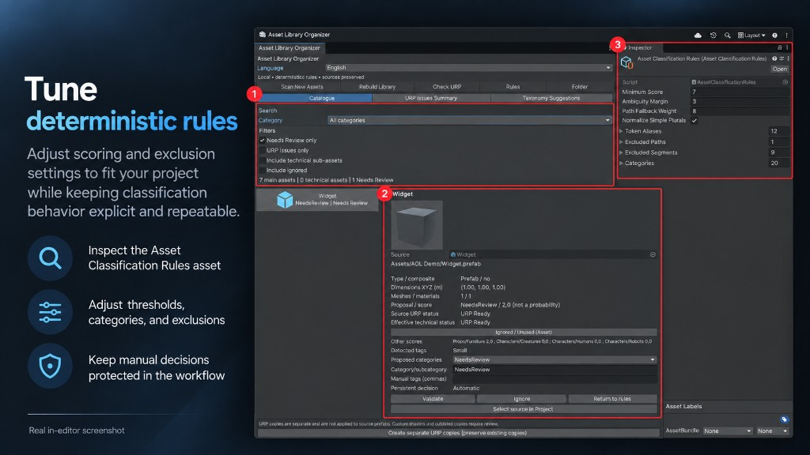
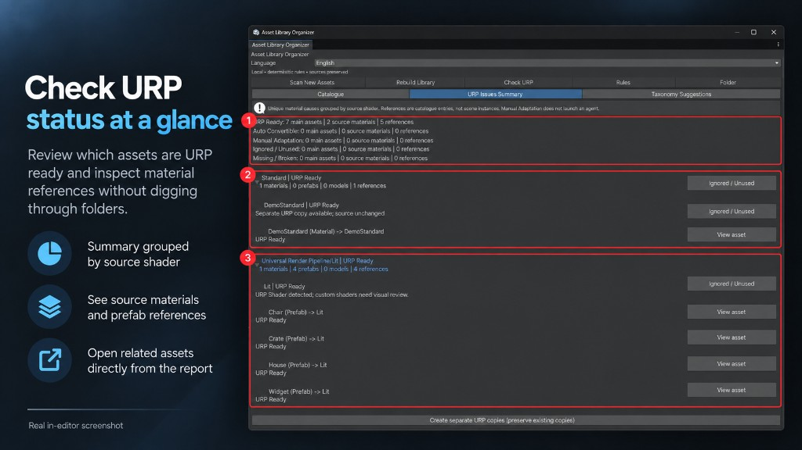
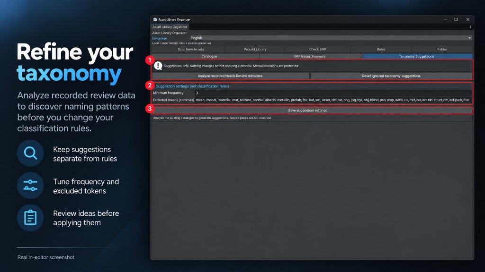

Simba tools
Practical Unity Editor tools that save developers time.
Focused tools for organizing assets, reviewing project content, and improving Unity Editor workflows without taking control away from the developer.
Editor tool
Asset Library Organizer & URP Inspector
Organize large Unity asset libraries, review uncertain assets, and inspect URP compatibility without modifying your source files.
- Unity Editor Tool
- URP Optional
01
Organize large asset libraries automatically
Scan supported assets across your Unity project and classify them into practical categories such as Environments, Props, Characters, Vegetation, Vehicles and Materials.
The original source assets stay in place. Asset Library Organizer builds a separate catalog instead of reorganizing your project behind your back.
Turn an unstructured Assets folder into a classified catalog.

02
Review uncertain assets instead of silently misclassifying them
Automatic classification is not always certain.
Assets with ambiguous results can be sent to Needs Review, giving the developer a clear place to inspect them instead of forcing a questionable classification.
Find uncertain assets before they become organizational mistakes.

03
Keep human control over automatic classification
Automatic, Validated and Ignored decisions allow developers to combine automation with manual control.
Categories, tags and classification rules remain visible and editable, while manual decisions persist between sessions.
Automate repetitive work without giving up control.

04
Inspect URP compatibility before conversion
Use the URP inspection workflow to identify materials and assets that are ready, automatically convertible or require manual review.
URP remains optional and is not added as a mandatory package dependency.
See what needs attention before starting URP conversion work.

05
Create URP copies without overwriting source materials
When automatic conversion is available, Asset Library Organizer creates separate readable URP material copies such as:
MaterialName_ALO_URP.mat
The original material remains unchanged.
Convert safely while keeping your originals intact.
Taxonomy
Improve your taxonomy over time
Saved review metadata can be analyzed to generate taxonomy suggestions, helping identify recurring patterns in assets that need manual review.
Suggestions stay separate from the classification rules until you choose to apply them.

What the tool does
- Automatic classification
- Needs Review workflow
- Persistent decisions
- Categories and tags
- Configurable classification rules
- URP compatibility inspection
- Separate URP material copies
- Source assets preserved
- Editor-only workflow
- No runtime component
Currently scanned
- Prefabs / Models
- Meshes
- Materials
- Textures
Currently not scanned
- Audio
- VFX
- UI
- Animations
- Shaders
- Scenes
Requirements
- Tested baseline
- Unity 6.3, 6000.3.24f1
- URP tested baseline
- 17.3.0
- URP
- Optional
- Environment
- Unity Editor only
Build cleaner Unity workflows.
Simba tools focuses on practical Editor utilities designed to reduce repetitive project work while keeping developers in control.